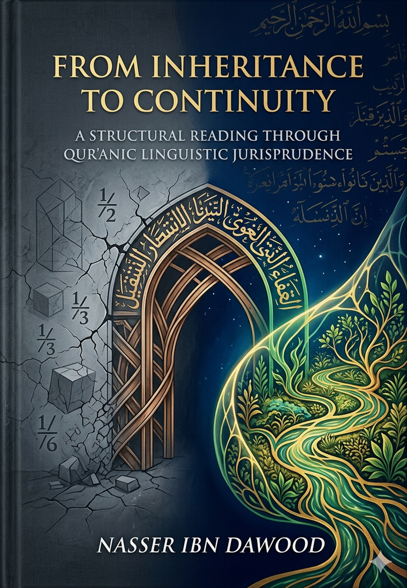

Condensed Conceptual Summary for the International Reader
Foreword: Why This Book Matters
For centuries, Islamic inheritance law ( *‘ilm al-farā’iḍ* ) has been treated as a precise mathematical calculator—a set of rigid fractions to divide a deceased person’s material wealth. Yet, despite this “accurate application,” we witness family disintegration, bitter disputes, and the marginalization of the weak. This book argues that the problem lies not in the divine text but in our reading tools. The Qur’an does not speak in ordinary “language” (a human, evolving social construct); it speaks in a cosmic “Lisān” —a coded, structural operating system. When we confuse the two, we turn a protocol for continuity into a machine for liquidation.
- Language (lughah) A human product, changing over time, derived from poetry and everyday speech.
- Lisān The divinely fixed, structural code of the Qur’an. Every letter and root carries a functional, engineering meaning independent of social customs.
1. Large Derivation (ishtiqāq kabīr) By permuting the letters of a root, we discover its living semantic field. For example, *t‑r‑k* (to leave) rotates with *r‑k‑t* and *k‑r‑t*, all revolving around “continuous mass, movement, and container.” Thus, “estate” ( *taraka* ) is not dead matter but a moving mass designed to remain active.
2. The Nūn of Multiplicity (not “nūn of women”) The Qur’anic nūn describes groups sharing a functional state, regardless of biological sex. When the Qur’ān says “they (feminine plural) are held,” it addresses any group in a state of functional delay or dependence, not exclusively females.
---
- Taraka (t‑r‑k) Not material possessions, but the continuous path that contains and manifests impact – knowledge, values, projects, relationships.
- Mīrāth (m‑r‑th) “The container of repeated stability” – the transfer of system responsibility, not just property.
- Popular view: luck = random chance.
- Qur’anic view: luck = the determined share within a network, which interacts with human behavior to produce the final outcome. Great luck is not wealth but a high capacity to receive and reproduce Qur’anic behavior (patience, consciousness).
- Male (dhakar, from dh‑k‑r) hardness, presence, preservation, leadership. Any soul (biologically male or female) that possesses firm consciousness and protective capacity.
- Female (unthā, from ’‑n‑th) softness, receptivity, containment, malleability. Any soul that is in a learning, receiving, or dependent state.
- Rijāl (r‑j‑l) “those who walk on their own feet” – the advanced, proactive, responsible category. Acquired by effort, not by biology.
- Nisā’ (n‑s‑’) “those who are postponed” – the delayed, dependent, or under‑development category. A biological male can be functionally a “woman” if he is passive and unaware.
- Guardianship (qiwāmah) A support system – the advanced bear the burden of protecting and enabling the delayed. It is a duty, not a privilege.
- Wālid (w‑l‑d) the source that “gives birth” to ideas within you – your intellectual or spiritual origin.
- Walad (l‑d) the project, idea, or impulse that emerges from you and drives you forward – your “intellectual offspring.”
- The Qur’ān commands kindness to “parents” as a strategy to preserve the sources that nourish your consciousness, not merely as emotional piety.
- Brother (’‑kh) sharer of the same path (kh = line, map).
- Kalālah (k‑l‑l) the state where the vertical line (parent and child) is broken. The inheritance then moves to the horizontal network (siblings) as a recovery protocol to prevent the dissipation of knowledge and assets.
- Not a statement of male superiority.
- It is a load distribution within a closed system (the estate). The male (functionally advanced) receives a larger operational budget because he carries heavier protective and financial responsibilities. In another context, a biologically female leader would receive the larger share.
- Sudus (s‑d‑s) from “closing” (sadd) and “inserting covertly” (dass). Given to parents to monitor and subtly repair the project.
- Thumn (th‑m‑n) from “place/container” (thamm) and “giving/cutting” (mann). Given to the spouse as a maintenance budget for the environment that raised the child/project.
- The Qur’ān repeats: “after a will he bequeaths or a debt” before every distribution.
- Will is not an exception; it is the original sovereign design. The owner of the legacy knows best who is competent to continue the project. The traditional rule “no will for an heir” is rejected. The will is the engineer’s final signature.
- Not rigid fences, but protective membranes that prevent systemic collapse. They are like circuit breakers: they do not stop movement but prevent destructive short‑circuits (conflicts, exclusion, waste).
---
- When inheritance is understood as energy redistribution, society becomes a garden (jannah) with flowing rivers (continuous resources).
- When boundaries are violated, society becomes fire (nār) – internal friction that consumes everything.
1. Will (Waṣiyyah) Sovereignty of the testator – determines who carries the code.
2. Inheritance (Mīrāth) Social safety net – ensures no one falls outside the system.
3. Boundaries (Ḥudūd) Protection – prevents deviation and collapse.
- Individual level Every conscious person must write a functional will, identifying who is advanced (competent to manage) and who is delayed (needs protection).
- Legal level Laws should expand the space for bequests while preserving a minimum social guarantee.
- Judicial level Courts should rely on expert evaluation of functional competence when the will is absent or disputed.
- Cultural level Shift the discourse from “who gets what” to “who continues the impact.”
- Nikāḥ (n‑k‑ḥ) not merely sexual intercourse, but the structural intertwining that produces a new entity capable of continuity.
- It is the beginning of building; inheritance is the continuation of that building.
- Without a correct understanding of marriage (as a productive, systemic bond), inheritance cannot be properly managed.
---
Conclusion: The Declaration of Conscious Independence
“A human being is responsible for his/her legacy through consciousness.”
- Inheritance is not about dividing the dead, but about managing the living after them.
- The Qur’anic verses on inheritance are not a dead calculator – they are a source code for civilizational sustainability.
- Whoever understands this moves from the fiqh of distribution to the fiqh of continuity; from the illusion of an end to the awareness of everlasting impact.
---
Knowledge is a universal right. The author firmly believes that wisdom should not be locked behind paywalls or language barriers.
- Global Access Policy All books in this library are available for free in multiple digital formats (PDF, HTML, DOCX, TXT).
- The Digital Library As of early 2026, the collection hosts 68 volumes (34 in Arabic and 34 in English), fully optimized for AI‑assisted research and digital archiving.
- Official Platforms
- Main Website: [nasserhabitat.github.io/nasser-books/](https://nasserhabitat.github.io/nasser-books/)
- GitHub: [nasserhabitat/nasser-books](https://github.com/nasserhabitat/nasser-books)
This English edition is a condensed conceptual adaptation. It is not a word‑for‑word translation, but rather an “extraction of essence.” It presents the core philosophical framework in accessible English, omitting the exhaustive linguistic debates and classical references found in the original Arabic text.
For the academic researcher: The original Arabic version remains the primary source for comprehensive linguistic analysis, detailed exegesis (Tafsīr), and the complete bibliography.
---
| English | Arabic | Functional meaning |
|---------|--------|--------------------|
| Inheritance | ميراث | Transfer of systemic
responsibility
|
| Estate | تركة | Continuous impact mass |
| Will | وصية | Sovereign design /
engineer’s signature |
| Luck | حظ | Systemic apportionment |
| Male (functional) | ذكر | Firm, preserving
consciousness
|
| Female (functional) | أنثى | Receptive, malleable
capacity |
| Advanced | رجال | Those who take
initiative |
| Delayed | نساء | Those in need of
support |
| Guardianship | قوامة | Support load, not
privilege |
| Parent | والد | Intellectual source |
| Child | ولد | Emerging project/idea |
| Sibling | أخ | Path‑sharer |
| Kalālah | كلالة | Horizontal
recovery protocol
|
| Boundaries | حدود | Protective membranes |
| Marriage | نكاح | Structural
intertwining
|
---
End of Summary – May this serve as a gateway to deeper understanding.